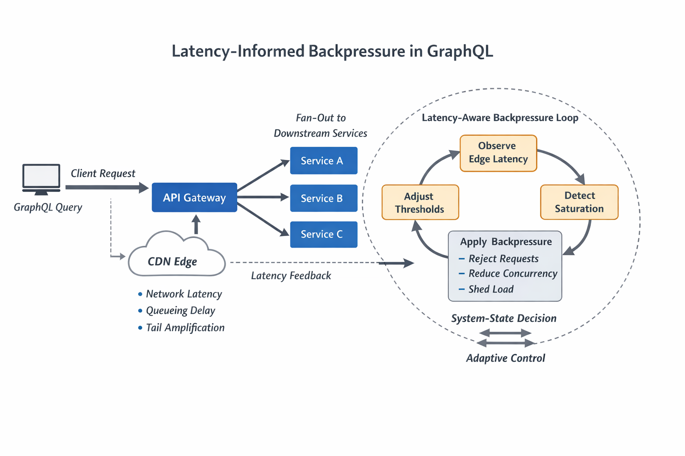

Designing Backpressure in GraphQL Using CDN Latency Signals
Using Edge Latency as a Real-Time Control Signal for Adaptive Load Shedding
Abstract
Modern GraphQL services face unique challenges under load due to their flexible query model and unpredictable execution cost. Traditional backpressure mechanisms—queue limits, rate limiting, and circuit breakers—are often insufficient when adversarial or malformed queries exploit resolver fan-out and backend amplification. This paper proposes a latency-aware backpressure framework that leverages CDN-provided server timing headers (e.g., from Cloudflare) as a real-time control signal. By propagating edge-observed latency into GraphQL execution policy, systems can dynamically shed load, degrade gracefully, and maintain service health even under malicious traffic patterns. We present architecture, algorithms, and implementation guidance grounded in distributed systems principles.
1. Introduction
GraphQL’s expressive power introduces a fundamental asymmetry:
- Client cost: O(1) request
- Server cost: O(N × depth × fan-out)
Under normal conditions, this asymmetry is manageable through caching, batching, and query cost analysis. However, under adversarial conditions—such as intentionally deep queries or high-cardinality fan-out—this imbalance becomes a vector for resource exhaustion.
Traditional mitigations include:
- Static query complexity limits
- Rate limiting at the edge
- Resolver-level timeouts
These approaches are reactive or static and fail to adapt to real-time system stress.
Latency is the most reliable signal of system pressure, and CDN edge telemetry provides a globally distributed, low-latency feedback loop for controlling GraphQL execution.
2. Background
2.1 Backpressure in Distributed Systems
Backpressure is the mechanism by which a system regulates incoming work based on its capacity.
Effective backpressure systems:
- Prevent queue buildup
- Bound tail latency
- Maintain fairness across tenants
2.2 CDN Latency Headers as a Signal
Modern CDNs expose detailed timing information via the Server-Timing HTTP header, while cache state is published separately in response headers such as CF-Cache-Status:
CF-Cache-Status: MISS
Server-Timing: edge;dur=12, origin;dur=240These include:
- Edge processing latency
- Origin latency
- Cache status
CDN-observed origin latency is an early indicator of backend saturation.
3. Problem: GraphQL Under Malicious Load
3.1 Resolver Amplification
A single query can trigger:
- Many downstream calls
- Unbounded joins
- Deep execution trees
3.2 Cache Busting
Attackers can vary query structure to bypass caching.
3.3 Latency Collapse
Without control:
- Queues grow
- Tail latency spikes
- Cascading failures occur
4. Latency-Driven Backpressure
Define:
P = L_origin / L_baselinePolicy:
- P < 1.2 → normal execution
- 1.2–2 → reduce depth and fan-out
- 2–3 → partial responses
- >3 → reject requests

5. Architecture
Client → CDN → GraphQL Gateway → Execution Engine → Services
Key principles:
- Edge-driven feedback
- Stateless decisions
- Graceful degradation
6. Implementation
Example latency extraction:
function extractLatency(headers) {
const timing = headers['server-timing'] || '';
const cacheStatus = headers['cf-cache-status'] || null;
const originMatch = /(?:^|,)\s*origin;dur=(\d+(?:\.\d+)?)/.exec(timing);
const edgeMatch = /(?:^|,)\s*edge;dur=(\d+(?:\.\d+)?)/.exec(timing);
return {
cacheStatus,
originLatency: originMatch ? parseFloat(originMatch[1]) : null,
edgeLatency: edgeMatch ? parseFloat(edgeMatch[1]) : null
};
}
function computeMaxDepth(p) {
if (p < 1.2) return 10;
if (p < 2) return 6;
if (p < 3) return 3;
return 1;
}7. Advanced Techniques
- Multi-signal fusion (latency + errors + queues)
- Adaptive caching
- Edge query normalization
8. Tradeoffs
| Pros | Cons |
|---|---|
| Real-time adaptation | Increased complexity |
| Improved tail latency | Potential partial responses |
9. Conclusion
Latency-driven backpressure transforms GraphQL from a static system into an adaptive one that can respond to real-time conditions and maintain stability under extreme load.
References
- Dean & Barroso (2013)
- Kleppmann (2020)
- Cloudflare documentation